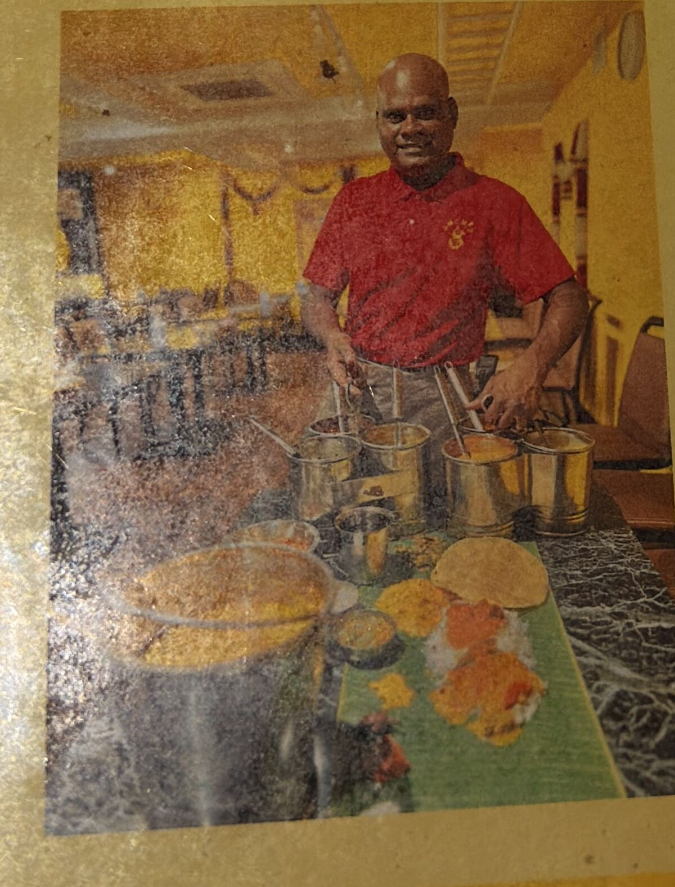

Tabelog Hyakumeiten 2024
Sri Mangalam
スリマンガラム
Chettinad cuisine, served on banana leaves, two minutes from Soshigaya-Okura Station.

The Chef
Theevan Mahalingam.

Chef Mahalingam — known to everyone as Maha-san — is from Theevankottai, the heart of the Chettinad region in Tamil Nadu. He learned to cook as a child from his mother, who ran a catering business out of their home.
He spent decades refining his craft across Tamil Nadu — from street stalls and village kitchens to five-star hotels — before bringing his repertoire to Japan. Here he helped open Nirvanam, Nandi, and Yajini as head chef before founding Sri Mangalam in May 2022.
“I want guests to fill up on delicious food and leave happy.”
That motto, and the village-style Tamil home cooking he holds closest to his heart, are what give Sri Mangalam its unmistakable warmth. The cast-iron griddle, the hand-ground spices, the long-pour chai poured at the table — all of it is Maha-san's invitation to sit down and eat with family.


Visit
Two minutes from the station.
Address
Sanko Building B1F
3-33-2 Soshigaya
Setagaya City, Tokyo 157-0072
東京都世田谷区祖師谷3-33-2
三興ビル B1F